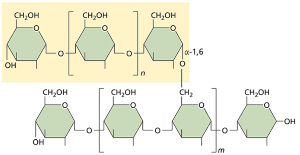
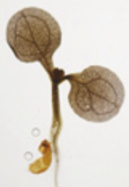

1. Identify the glucans
Which structure is amylose and which is amylopectin? Identify the linkage that distinguishes them and locate a reducing end.


Answer discussion · Q1
Unlock answers with JavaScript enabled.
PLEN / Biokemi 2 / Day workbook
09:00–17:00 / Day plan
Follow the sessions in order. All exercise questions, figures, answer discussions and the virtual lab are on this page. Download one notebook containing your work from the whole day.
| Time | Session | Teacher / speaker |
|---|---|---|
| 09:00–09:45 | Glycogen lecture | Marek |
| 10:00–10:45 | Starch lecture | Marek |
| 11:00–12:00 | Theoretical exercise and group work | Marek |
| 13:00–13:45 | Starch and brewing industry talk | Finn Lok, Carlsberg |
| 14:00–15:45 | Virtual starch-degradation lab | Marek |
| 16:00–17:00 | Exam-style assignment | Marek |
Lunch is 12:00–13:00. The afternoon virtual lab includes its own sample guide and TLC instructions.
Work in groups for the morning and virtual lab; answer the 16:00 assignment individually. Answers from all sessions are saved in one notebook.
Download your notebook before leaving.
09:00–09:45 / Marek
Use the lecture to connect glycogen structure with mobilization and regulation in liver and muscle.
10:00–10:45 / Marek
Focus on amylose, amylopectin, granule structure and the enzymes of synthesis and degradation.
11:00–12:00 / Marek / Group work
Work in groups of 3–4. Attempt each question before opening its answer discussion. Use the figures on this page to answer Questions 1–5.
Allow 10 minutes for Questions 1–2, 10 for Question 3, 20 for the pathway maps and 10 for the seedlings. Use the last 10 minutes to review answers with your group. Your instructor will share the password for the answer discussions.
Which structure is amylose and which is amylopectin? Identify the linkage that distinguishes them and locate a reducing end.

a. Choose the role shown in the course pathways. Select “Context dependent” when the enzyme group contributes to both synthesis and breakdown.
| Enzyme | Your classification |
|---|---|
| AGPase · ADP-glucose pyrophosphorylase | |
| α-Amylase | |
| β-Amylase | |
| DPE1 · disproportionating enzyme 1 | |
| DPE2 · disproportionating enzyme 2 | |
| GBSS · granule-bound starch synthase | |
| Isoamylase complex | |
| Pullulanase-type debranching enzyme | |
| SBE · starch branching enzyme | |
| SSS · soluble starch synthases |
Identify the enzyme at each numbered red box in Figures 1 and 2. Select a box to jump to its answer field below the figure.
Glucose 1-phosphate + ATP
Produces: ADP-glucose + PPi
ADP-glucose + growing α(1→4) glucan
Produces: Longer α(1→4) chain + ADP
An α(1→4)-linked glucan segment
Produces: Glucan with a new α(1→6) branch
Unsuitably branched pre-amylopectin
Produces: Trimmed chains compatible with ordered amylopectin
α(1→6)-branched glucan
Produces: Debranched glucan + released linear chains
Internal α(1→4) sites in a glucan
Produces: Shorter maltooligosaccharides
Nonreducing ends of α(1→4) chains
Produces: Maltose + shortened chains / limit dextrin
Two maltotriose molecules
Produces: Maltopentaose + glucose
Maltose + acceptor glucan
Produces: Glucose + acceptor glucan extended by one residue
These two Arabidopsis seedlings were collected in the evening. The source exercise identifies one as wild type and the other as a mutant affecting starch biosynthesis.


13:00–13:45 / Finn Lok, Carlsberg
Use the industry talk to connect substrate preparation, enzyme choice and product composition with a real starch-processing application.
14:00–14:10 / The question
14:00–15:45 · In silico adaptation of the original laboratory exercise, Section A.
How can you tell whether an enzyme cut a glucan backbone or removed a branch? Use the bond diagram, the iodine colour and the products on a chromatography plate to test your prediction.
Mussel preparation. Highly branched α-glucan with relatively accessible chains.
Amylose and amylopectin packed into semi-crystalline storage granules.
Amylose-rich barley starch. The simulation models it as unbranched. Its chains can pack closely enough to restrict enzyme access.
What goes into the tubes? Tris buffer is the control. Saliva supplies α-amylase, which cuts internal α(1→4) bonds along a chain. Isoamylase cuts α(1→6) bonds at branch points. The same enzyme can give different results on different substrates if its target bonds are absent or hard to reach.
Your group investigates one substrate. Predict its five treatments, run the samples, and compare the results with a matched control. At 15:20, share results across substrates and download one group notebook by 15:45. Go to the sample matrix.
The simulation uses the original sample design. Colours, migration distances and band intensities are illustrative.
Prepare untreated and heat-treated portions of each substrate. Heat treatment: 60°C for 5 min. Each reaction contains 100 µl substrate + 100 µl diluted saliva, isoamylase or Tris, followed by 30 min at 37°C and cooling on ice. “Untreated” refers to pretreatment; all reactions share the same 37°C incubation.
Saliva supplies α-amylase. Isoamylase is the α(1→6) debranching enzyme. There is no β-amylase treatment in this exercise.
TLC: silica; acetone:ethanol:water 7:1:2. The original sequence is iodine-vapour visualization, then sulfuric-acid/methanol treatment and heating for broader carbohydrate detection. Here you compare virtual images of those readouts. A separate iodine-colour panel is an added teaching aid.
Heating can make starch chains more accessible. The extent of gelatinization at 60°C depends on the preparation.
| Time | Activity |
|---|---|
| 14:00–14:10 | Introduce structures, enzymes and the question. |
| 14:10–14:30 | Predict the five conditions for your assigned substrate; explain the controls. |
| 14:30–14:50 | Run virtual samples and inspect iodine signals and bond cleavage. |
| 14:50–14:55 | Short break. |
| 14:55–15:20 | Interpret TLC using standards and both detection methods. |
| 15:20–15:35 | Compare substrates; reconcile observations with predictions. |
| 15:35–15:45 | Review the results table and select your conclusions; download the notebook. |
14:10–14:50 / Predict & investigate
Work across your assigned row, or choose potato starch if you are working independently. Select each sample and save a prediction by choosing an outcome. After choosing all five outcomes, return to each sample and select Run virtual sample. Compare the iodine colour with its control and use the before/after diagram to locate any cut bonds.
| Substrate | Tris Untreated | Tris Heated | Saliva Untreated | Saliva Heated | Isoamylase Heated |
|---|
Sample 1
α(1→4) α(1→6) R Reducing end N Nonreducing end
Hexagons are schematic glucose residues, not atomic structures. Bond ports indicate donor C1 and acceptor C4 or C6; the ring oxygen is O. This small linkage sketch does not determine the iodine or TLC pattern. For potato starch, it shows an amylopectin fragment.
14:55–15:20 / Analytical evidence
Each numbered lane contains the products from one tube. They started together on the origin line. As solvent travelled up the plate, different products travelled different distances. In this system the shorter linear standards travel farther.
Rf is the distance a spot travelled from the origin divided by the distance the solvent front travelled. Two spots at the same height have the same Rf on this plate.
Co-migration with a standard supports a provisional assignment; it does not uniquely establish identity. Low-mobility material may contain long linear chains, branched dextrins or retained polymer. These cannot be assigned a unique DP from this plate.
The short DP1, DP2, DP4 and DP7 standards are not visibly detected by iodine in this teaching example. Long iodine-binding chains can stain, while smaller products appear after charring. Band intensity is not calibrated for quantity, and absence of a visible band is not proof of absence.
There is no glucose-producing exo-enzyme in this exercise. The illustrative saliva lanes contain small oligosaccharides, not complete conversion to glucose.
15:20–15:45 / Compare & conclude
Once each group has run its five samples, select Reveal class dataset at the plate to see all 15 results. Compare samples 14 and 15 with their heated Tris controls, 5 and 6. Which substrate could release chains when isoamylase removed branches? Use the results table to check your interpretation, then finish the three questions and download your notebook.
| Sample / treatment | Prediction | Revealed result | Your interpretation |
|---|
16:00–17:00 / Marek / Individual work
Work individually before opening the answer discussion. Allow about 10 min to read and plan, 35 min to answer the four questions and 15 min to review your reasoning.
The following is an English adaptation of the supplied Danish assignment. Download the original Danish question sheet.
Starch granules are gelatinized by heating in water or buffer to disrupt their semi-crystalline structure and make the chains accessible to enzymes. In this question, assume the starch has been adequately gelatinized. This differs from assuming that every preparation in the afternoon lab fully gelatinizes at 60°C.
After treatment with β-amylase, potato starch has a β-amylolytic limit of approximately 46% and maize starch approximately 43%. Here the percentage denotes the fraction of the starch degraded by β-amylase under the stated conditions.
These percentages are given in the source assignment. They are not generated by the virtual lab or particle model.
Initially disregard amylose. What can the 46% and 43% limits tell you about the structures of potato and maize amylopectin? Explain the mechanism and qualify the inference.
If glycogen is used as the substrate, would you expect the percentage to be higher or lower than for these starches? Explain your expectation.
What happens to amylose when β-amylase is added? Describe where the enzyme acts and its main product.
Name an enzyme that could be added before β-amylase to improve conversion of the starch to maltose. Explain what bond it cleaves and why this helps.
The original asks for breakdown “completely to maltose”. Address the intended debranching mechanism, then consider whether that wording guarantees a 100% maltose yield for every chain-length distribution.
The theoretical questions and figures come from the supplied theoretical_exercise_slides_for-class_v1_students.pptx, checked against the answer deck and theoretical_exercise_v2_with-answers-for-absalon.docx. Figures 1 and 2 show the supplied synthesis and degradation sheets with numbered reactions. The old dates, timetable and references to attending a wet lab have been replaced with today’s programme.
The 14:00 lab uses Section A of LabManual_2023-2024_Danish.docx. Only its iodine/TLC scenarios are simulated. The evening assignment is adapted from eksamenslignende opgave uge 49.pdf, its answer PDF and the supplied answer slides. Question content is available inline; original Danish exam PDFs are optional downloads.